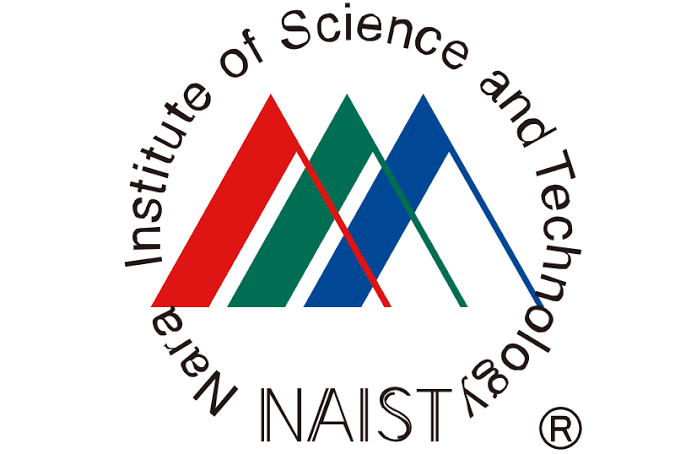
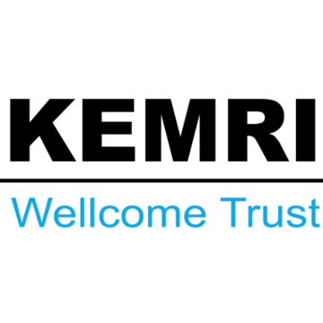

Overview
Computational biologist and senior scientist at Orion Pharma in Translational Medicine, supporting oncology research across pre-clinical and clinical programmes. Recent work focuses on immuno-oncology, translational bioinformatics, and using patient molecular data to inform therapeutic development.
Current focus and capabilities
- Support clinical indication selection and translational decisions by integrating disease biology with clinical and molecular evidence.
- Discover and assess biomarker hypotheses using patient DNA-seq, ctDNA, and RNA-seq, including immune and tumour-related features.
- Develop R and Python tools and Shiny applications; apply AI-driven approaches to oncology target discovery and prioritization.
- Bring expertise in multi-omics, single-cell and spatial analysis, and cross-functional collaboration across translational, clinical, and research teams.
Earlier work spans statistical genomics at the University of Bristol and infectious-disease genomics at the KEMRI-Wellcome Trust Research Programme. He also holds an Adjunct Faculty position at Pwani University, Kenya.
Career overview
2008 BSc in Biology University of Nairobi

2011 MSc studies Nara Institute of Science and Technology
2013–2015 PhD studies Nara Institute of Science and Technology

2016–2019 Postdoctoral research KEMRI-Wellcome Trust Research Programme
2019–2020 Statistical genomics University of Bristol
2020–Present Senior Scientist Orion Pharma
Employment & experience
Feb 2020 – Present
Turku, Finland
Senior Scientist – Computational Biologist
Orion Pharma
Supports Translational Medicine and oncology research and development across pre-clinical and clinical projects. Develops and applies computational approaches to high-throughput omics data, contributes to drug-target prioritization and biomarker discovery, and collaborates with academic groups on data-driven bioinformatics and AI.
Apr 2019 – Jan 2020
Bristol, United Kingdom
Senior Research Associate – Statistical Genomics
MRC Integrative Epidemiology Unit, University of Bristol
Applied genomics and epidemiology methods to identify therapeutic targets for autoimmune diseases, communicated scientific findings, and facilitated academic–pharma collaboration.
Jan 2019 – Mar 2019
Heidelberg, Germany
Visiting Research Scientist
Heidelberg University
Developed statistical methods for analysis of KILchip Protein Microarray data.
Mar 2018 – Jun 2019
Kilifi, Kenya
Senior Postdoctoral Scientist – Acting Head of Statistics
KEMRI-Wellcome Trust Research Programme
Led the statistics unit, supported institutional statistical needs, and developed statistical methods for diverse omics datasets.
Mar 2016 – Nov 2018
Kilifi, Kenya
Early Career Postdoctoral Scientist
KEMRI-Wellcome Trust Research Programme
Conducted research on malaria and virus genomics and diversity in long-term surveillance; wrote and published research; and supervised master’s students and interns.
Jul 2016 – Present
Kilifi, Kenya
Adjunct Faculty
Pwani University
Taught MSc Bioinformatics courses in biostatistics, data science for biology, databases, and data visualization; examines master’s and doctoral theses in bioinformatics.
Mar 2015 – Sep 2015
Niigata, Japan
Medical Sales Representative
Pharmaken Kenya Ltd.
Marketed generic anti-inflammatory and analgesic products in Nairobi and the North Eastern region.
Education
2013–2015
PhD in Computational Biology
Nara Institute of Science and Technology (NAIST)
View doctoral thesis
Integrated pathway-based transcription regulation network mining to decipher the role of transcription factors in the heterogeneity of small cell lung cancer phenotypes.
2011–2013
MSc in Computational Biology
Nara Institute of Science and Technology (NAIST)
View master’s thesis
Protein sequence diversity characterization using the physical attributes of amino acids: Examples in Plasmodium falciparum sequences and terpenoid enzymes.
2010–2011
Intensive Japanese Language Course
Osaka University
2004–2008
BSc in Biology
University of Nairobi
1999–2002
Secondary Education
St Patrick’s High School, Iten
Research & technical areas
Core competencies
- Translational medicine: connect discovery and clinical evidence; frame answerable questions; interpret findings in biological and programme context.
- Omics and bioinformatics: high-throughput data analysis across genomics, transcriptomics, proteomics, and single-cell and spatial modalities.
- Immuno-oncology: tumour–immune biology, immune-cell profiling, tumour-infiltrating immune cells, and immune-related signatures.
- Biomarkers and precision oncology: support biomarker hypotheses, molecular subgroups, and patient-selection strategies.
- Statistical genomics: GWAS, genetic epidemiology, Mendelian randomization, and proteomic-data analysis.
Modern pharmaceutical data science
- R and Python tool development: develop analytical tools, reusable workflows, and data-science applications to support research and development questions, omics analysis, and scientific decision-making.
- AI-driven drug discovery: apply AI and machine-learning approaches to support oncology target discovery and prioritization, target-confidence assessment, and data-driven hypothesis generation.
- Reproducible analytics: build fit-for-purpose, documented workflows with attention to data provenance, quality, and reviewability.
- Evidence-aware interpretation: account for study design, cohort composition, data limitations, and uncertainty; distinguish exploratory signals from validated findings.
- Cross-functional delivery: collaborate with clinical, translational, computational, and experimental colleagues; communicate results for both technical and non-technical audiences.
- Responsible use of advanced methods: select methods appropriate to the question and data, with transparent assumptions and suitable validation.
Broader research experience
- Statistical genomics and genetic epidemiology for therapeutic target prioritization.
- Malaria and viral genomics, long-term surveillance, host immunity, and infectious-disease research.
- Bioinformatics across genomics, transcriptomics, and proteomics, with experience communicating and publishing collaborative research.
Selected publications
Abstract 914: Differential expression of Cbl-b in tumor infiltrating immune cells in patients with solid tumors. Elli Narvi, Reetta Virtakoivu, Endrit Elbasani, Nelson Kibinge, Laura Ravanti, and Anil K. Thotakura (2025). Cancer Research, 85(8 Supplement 1), 914. Presented at the American Association for Cancer Research (AACR) Annual Meeting. Abstract · DOI
Correlation of laboratory safety variables with disease course in the REFALS phase 3 study of levosimendan in people with ALS (4125). Nelson Kibinge, Alex Dickens, Angela Genge, Nicholas Maragakis, Susanne Petri, Leonard Van den Berg, Ammar Al-Chalabi, Valtteri Aho, Kira Holmström, and Merit Cudkowicz (2021). Neurology, 96(15 supplement), 4125. Abstract
Characterizing the causal pathway for genetic variants associated with neurological phenotypes using human brain-derived proteome data. Nelson K. Kibinge, Caroline L. Relton, Tom R. Gaunt, and Tom G. Richardson (2020). The American Journal of Human Genetics, 106(6), 885–892. Article · Google Scholar
Integrated pathway-based transcription regulation network mining and visualization based on gene expression profiles. Nelson Kibinge, N. Ono, M. Horie, T. Sato, T. Sugiura, M. Altaf-Ul-Amin, et al. (2016). Journal of Biomedical Informatics, 61, 194–202. Google Scholar
Expand to view other Google Scholar records
- Biomarkers of post-discharge mortality among children with complicated severe acute malnutrition. J. M. Njunge, A. Gwela, N. K. Kibinge, et al. (2019). Scientific Reports, 9, 5981. Scholar
- Data mining methods for omics and knowledge of crude medicinal plants toward big data biology. F. M. Afendi, N. Ono, Y. Nakamura, K. Nakamura, L. K. Darusman, N. Kibinge, et al. (2014). Scholar
- Controlled Human Malaria Infection in Semi-Immune Kenyan Adults (CHMI-SIKA): a study protocol to investigate in vivo Plasmodium falciparum malaria parasite growth in the context of pre-existing immunity. M. C. Kapulu, P. Njuguna, M. M. Hamaluba, CHMI-SIKA Study Team (2019). Wellcome Open Research, 3, 155. Article · Scholar
- Controlled Human Malaria Infection in Semi-Immune Kenyan Adults (CHMI-SIKA): a study protocol… M. C. Kapulu, P. Njuguna, M. M. Hamaluba, CHMI-SIKA Study Team (2019). Additional Google Scholar record for the protocol. Scholar
- KILchip v1.0: A novel Plasmodium falciparum merozoite protein microarray to facilitate malaria vaccine candidate prioritization. G. Kamuyu, J. Tuju, R. Kimathi, K. Mwai, J. Mburu, N. Kibinge, et al. (2018). Frontiers in Immunology, 9, 2866. Article · Scholar
- Anti-merozoite antibodies induce natural killer cell effector function and are associated with immunity against malaria. D. Odera, J. Tuju, K. Mwai, et al., including N. Kibinge (2023). Science Translational Medicine, 15(682), eabn5993. Article · Scholar
- Distinct kinetics of antibodies to 111 Plasmodium falciparum proteins identifies markers of recent malaria exposure. V. Yman, J. Tuju, M. T. White, et al., including N. Kibinge (2022). Nature Communications, 13, 331. Article · Scholar
- Clustering of 3D-structure similarity based network of secondary metabolites reveals their relationships with biological activities. Y. Ohtana, A. A. Abdullah, M. Altaf-Ul-Amin, et al. (2014). Molecular Informatics, 33(11–12), 790–801. Scholar
- Molecular epidemiology of human rhinovirus from one-year surveillance within a school setting in rural coastal Kenya. M. M. Luka, E. Kamau, I. Adema, et al., including N. Kibinge (2020). Open Forum Infectious Diseases, 7(10), ofaa385. Article · Scholar
- Evaluating the performance of tools used to call minority variants from whole genome short-read data. K. S. Mohammed, N. Kibinge, P. Prins, et al. (2018). Wellcome Open Research, 3, 21. Scholar
- Evaluating the performance of tools used to call minority variants from whole genome short-read data (version record). K. S. Mohammed, N. Kibinge, P. Prins, et al. (2018). Scholar
- Evaluating the performance of tools used to call minority variants from whole genome short-read data (version record). K. S. Mohammed, N. Kibinge, P. Prins, et al. (2018). Scholar
- Systematization of the protein sequence diversity in enzymes related to secondary metabolic pathways in plants, in the context of big data biology inspired by the KNApSAcK database. S. Ikeda, T. Abe, Y. Nakamura, N. Kibinge, et al. (2013). Plant and Cell Physiology, 54(5), 711–727. Scholar
- Cerebrospinal fluid markers to distinguish bacterial meningitis from cerebral malaria in children. J. M. Njunge, I. N. Oyaro, N. K. Kibinge, et al. (2017). Wellcome Open Research, 2, 47. Scholar
- Breadth of antibodies to Plasmodium falciparum variant surface antigens is associated with immunity in a controlled human malaria infection study. H. W. Kimingi, A. W. Kinyua, N. A. Achieng, et al. (2022). Frontiers in Immunology, 13, 894770. Scholar
- Peripheral blood mononuclear cell transcriptomes reveal an over-representation of down-regulated genes associated with immunity in HIV-exposed uninfected infants. Z. D. Musimbi, M. K. Rono, J. R. Otieno, N. Kibinge, et al. (2019). Scientific Reports, 9, 18124. Article · Scholar
- protGear: A protein microarray data pre-processing suite. K. Mwai, N. Kibinge, J. Tuju, G. Kamuyu, R. Kimathi, J. Mburu, et al. (2021). Computational and Structural Biotechnology Journal. Article · Scholar
- Molecular epidemiology of human rhinovirus from one-year surveillance within a school setting in rural coastal Kenya. E. Gicheru, A. Gichuki, D. J. Nokes, M. M. Luka, et al., including N. Kibinge (2020). medRxiv · Scholar
- In-silico immune cell deconvolution of the airway proteomes of infants with pneumonia reveals a link between reduced airway eosinophils and an increased risk of mortality. C. J. Sande, J. M. Waeni, J. M. Njunge, et al., including N. K. Kibinge (2019). bioRxiv, 840090. Scholar
- Characterization of antibody kinetics in travellers with Plasmodium falciparum infection allows for identification of serological markers of cumulative and recent malaria exposure. V. Yman, J. Tuju, M. T. White, et al., including N. Kibinge (2019). American Journal of Tropical Medicine and Hygiene, 101, 290. Scholar
- Assessing the utility of minority variant composition in elucidating RSV transmission pathways. G. Githinji, C. N. Agoti, N. Kibinge, et al. (2018). bioRxiv. Scholar
- Protein sequence modeling and transcription regulation network analysis towards integrative big data biology. N. K. Kibinge (2016). Nara Institute of Science and Technology. Scholar
- Plasmodium phylogenetics and numeric modification of amino acid residues. N. K. Kibinge (2013). Nara Institute of Science and Technology. Scholar
- Integration of residue attributes for sequence diversity characterization of terpenoid enzymes. N. Kibinge, S. Ikeda, N. Ono, M. Altaf-Ul-Amin, and S. Kanaya (2014). BioMed Research International, 2014, 753428. Scholar
- Distinct kinetics in antibody responses to 111 Plasmodium falciparum antigens identifies novel serological markers of recent malaria exposure. V. Yman, J. Tuju, M. T. White, et al., including N. Kibinge (2020). medRxiv. Scholar
- RSV modelling meeting. K. Atkins, M. Baguelin, S. Brand, et al., including N. Kibinge (2017). Meeting record, University of Warwick. Scholar
- Fall-risk classification of the timed up-and-go test with principal component analysis. N. Tanaka, N. A. Zakaria, N. K. Kibinge, et al. (2014). International Journal of Neurorehabilitation, 1, e106. Scholar
- The landscape of paediatric infectious disease exposure in a rural sub-Saharan Africa setting in Kilifi, Kenya: longitudinal serological analysis over two decades and priorities for future vaccine development. D. F. Foley, T. K. Chege, J. Kabagenyi, et al., including N. Kibinge (2024). medRxiv. Scholar record
Google Scholar showed 30 article records and an additional “Show more” control. This archive reflects records retrievable at the time; Scholar may include preprints, meeting records, and duplicate/version entries. Check the live profile for completeness.
Awards & achievements
2025 Orion Innovation Award — Development of an in-house oncology single-cell explorer platform, deployed in production for target discovery and ideation.
2010 Monbukagakusho (MEXT) Scholarship — Awarded to pursue master’s and doctoral studies in bioinformatics.
2008 Gandhi Smarak Nidhi Fund Prize — Top graduate student, School of Biological Sciences, University of Nairobi, Class of 2008.